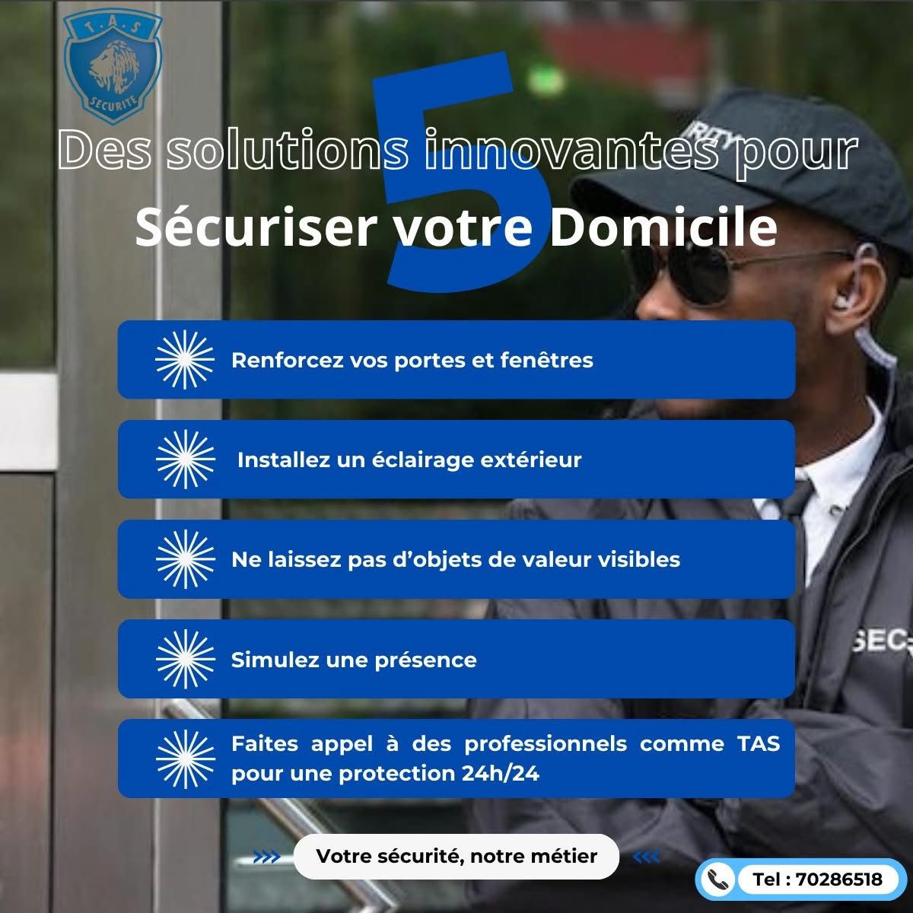
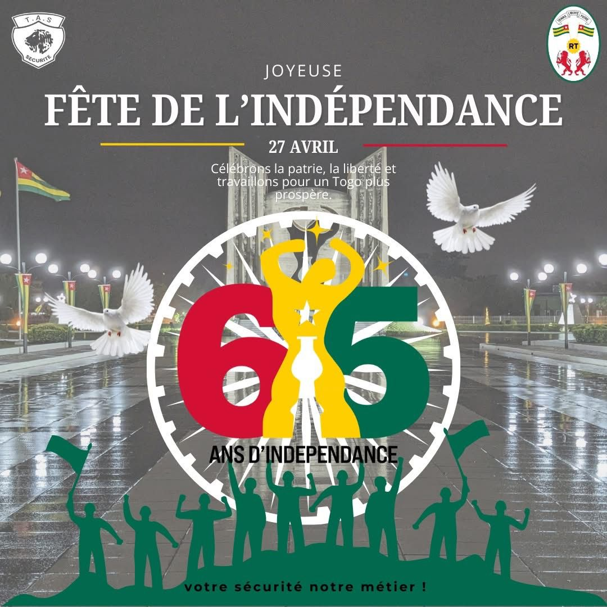
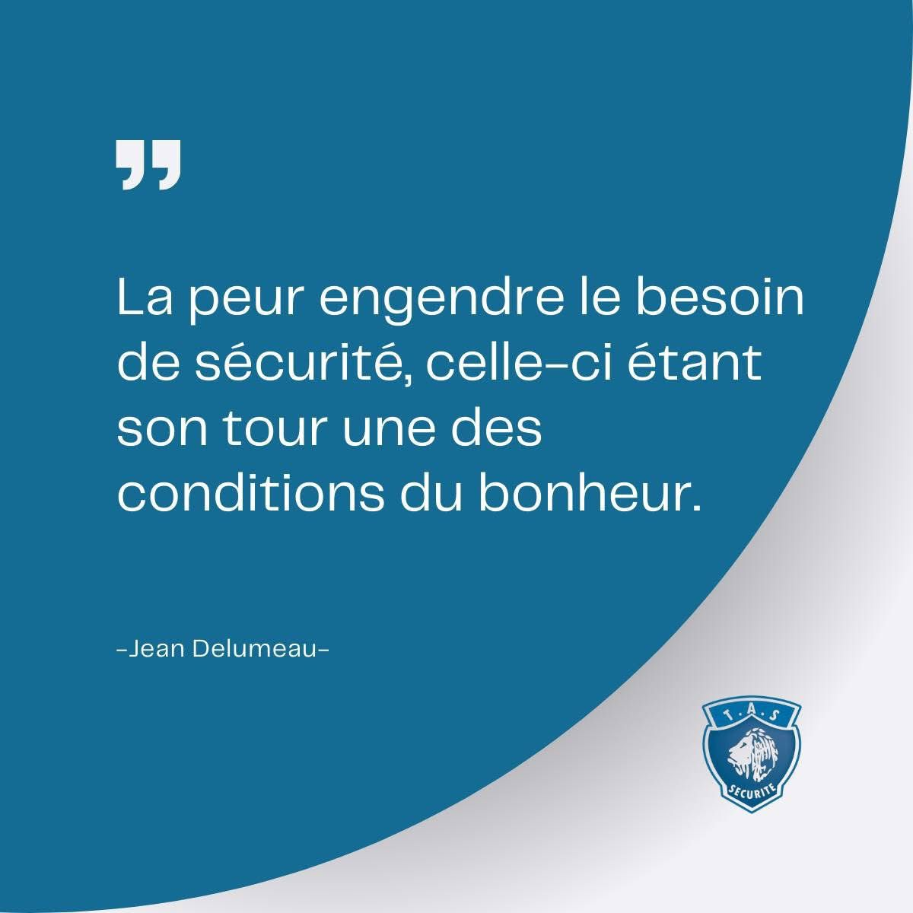

Transformation digitale
Togo Assistance Services
Projet orienté structuration de présence digitale, image de marque et amélioration de la visibilité professionnelle de l’entreprise.
Actions menées
- Observation et analyse de l’absence de présence active sur les réseaux sociaux
- Réflexion sur la refonte du logo et de la charte graphique
- Création et gestion du compte LinkedIn de l’entreprise
- Valorisation des formations sécurité à travers des contenus écrits et audiovisuels
Ce que ce projet montre
- Esprit d’initiative
- Vision branding et communication digitale
- Capacité à structurer une présence en ligne
- Compréhension de la communication d’entreprise


